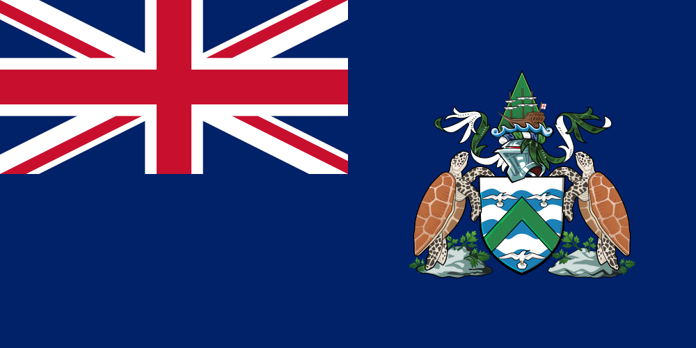
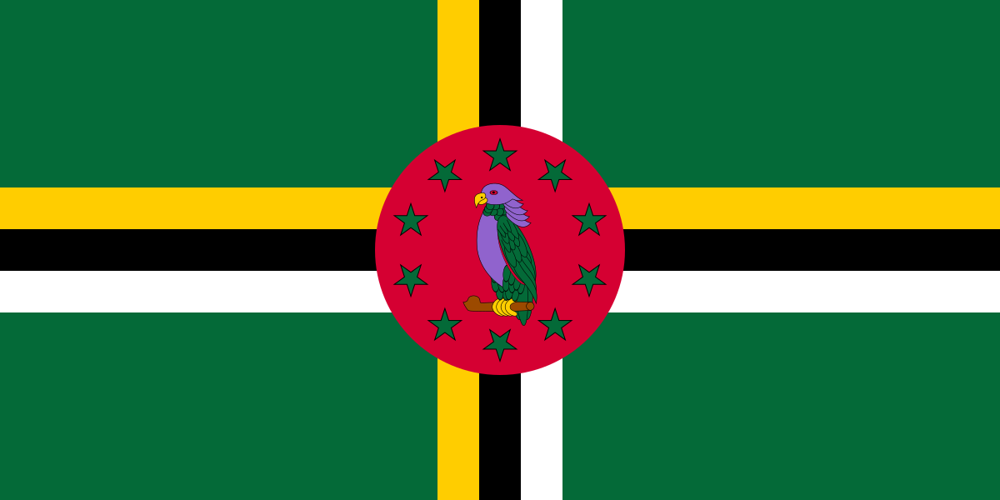
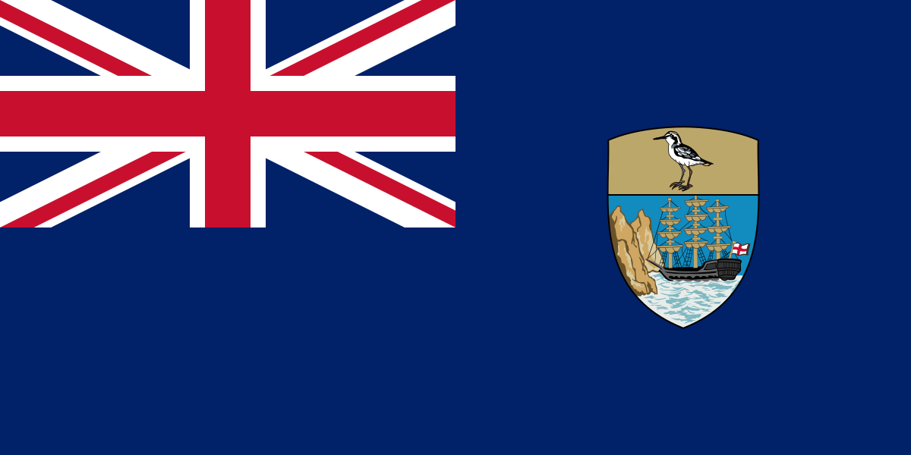
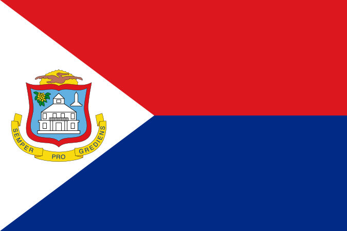
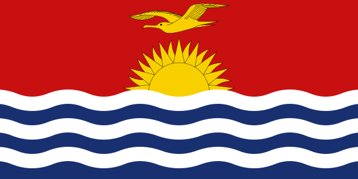
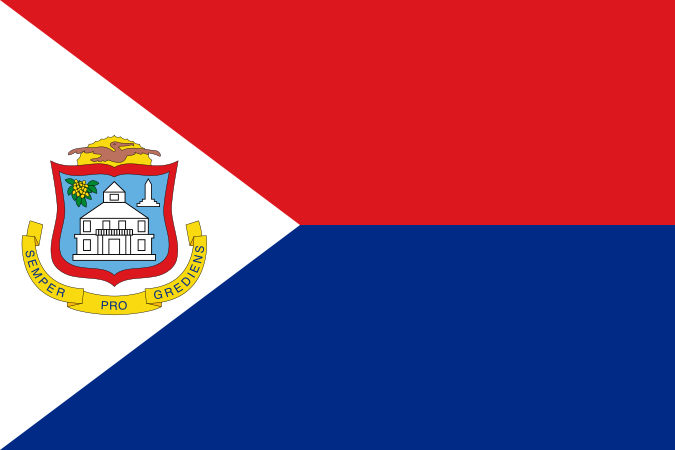
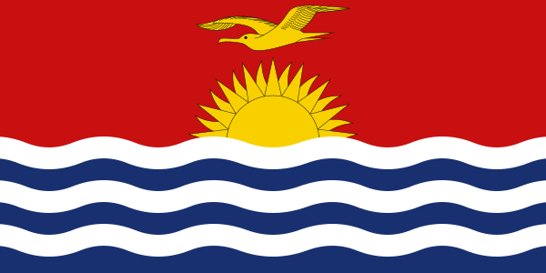

.svg) Flag of Plurinational State of Bolivia
Flag of Plurinational State of Bolivia
Bird: Condor  Bird: Flag of Ascension Island
Sea gulls (yes, there are atleast three of them, squint your eyes really hard to see)  Flag of Dominica
Bird: Purple Sisserou Parrot/Imperial amazon/Dominican amazon
 Flag of Ecuador
Flag of Ecuador
Bird: Condor
 Flag of Fiji
Flag of Fiji
Bird: Dove (of Peace)
 Flag of Guatemala
Flag of Guatemala
Bird: Resplendent quetzal Flag of Papua New Guinea
Bird: Raggiana bird-of-paradise

Flag of Saint Helena
Bird: Saint Helena plover (what an adorable little birdie!)  Flag of Sint Maarten
Bird: Pelican (yeah, no specific species. Not even pelican of peace or something. Just a Pelican.) Flag of Uganda
Flag of Uganda
Bird: Grey crowned crane  Flag of Kiribati
Bird: frigatebird Flag of Christmas Island
Bird: White-tailed tropicbird
Okay so this flag of the Christmas Island and the flag above of Kiribati comes with my own bird theory. The flag of Christmas Island features Golden bosun subspecies of the White-tailed tropicbird found in the tropical Atlantic, western Pacific and Indian Oceans. The Flag of Kiribati above features Frigatebird which has a subsepcies called Christmas frigatebird which is tagged as vulnerable and only breeds on the Christmas Island, as opposed to the White-tailed tropicbird which is least concerned and breeds at muliple places. If the Christmas Island people wanted so desparately to put a bird on their flag, then why did they not choose Chistmas frigatebird to be that bird like aaaaaa it just doesn't make sense to me?!
And now a scam bird flag because that bird's not even real! Flag of Zimbabwe Zimbabwe Bird (Yes, you're correct, that is not a real species of bird, but we will let it go.)
Bird: Saint Helena plover (what an adorable little birdie!)  Flag of Sint Maarten
Bird: Pelican (yeah, no specific species. Not even pelican of peace or something. Just a Pelican.)
Flag of Uganda
Bird: Grey crowned crane  Flag of Kiribati
Bird: frigatebird Flag of Christmas Island
Bird: White-tailed tropicbird
Okay so this flag of the Christmas Island and the flag above of Kiribati comes with my own bird theory. The flag of Christmas Island features Golden bosun subspecies of the White-tailed tropicbird found in the tropical Atlantic, western Pacific and Indian Oceans. The Flag of Kiribati above features Frigatebird which has a subsepcies called Christmas frigatebird which is tagged as vulnerable and only breeds on the Christmas Island, as opposed to the White-tailed tropicbird which is least concerned and breeds at muliple places. If the Christmas Island people wanted so desparately to put a bird on their flag, then why did they not choose Chistmas frigatebird to be that bird like aaaaaa it just doesn't make sense to me?!
And now a scam bird flag because that bird's not even real! Flag of Zimbabwe Zimbabwe Bird (Yes, you're correct, that is not a real species of bird, but we will let it go.)